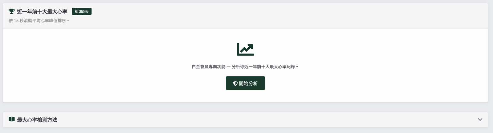
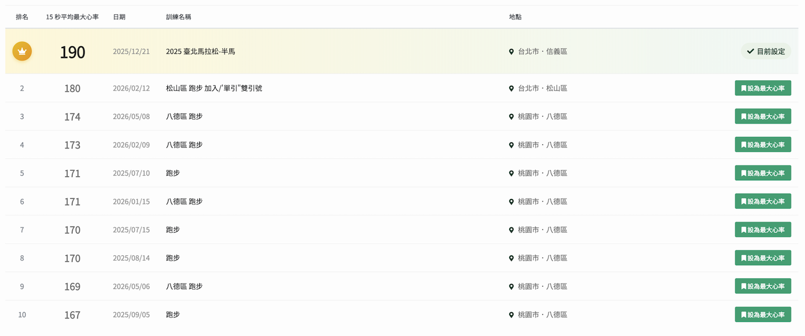
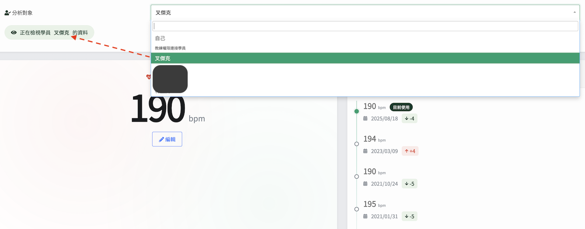

RQ 最大心率分析工具大改版
有使用心率錶的人，可能聽過這個公式：
最大心率（MHR）＝ 220 - 年齡。
但這個公式只能算出某個年齡的平均值，你實際的 MHR，可能比公式高出 10 下，也可能低 15 下。所以直接用公式計算 MHR，只能得到可能的平均值，並不是你真正的 MHR。
當跑者把自己的 MHR 設定錯了，心率區間也會跟著偏掉，心率偏掉後，RQ 的即時跑力、當前跑力、配速區間與訓練指數等眾多分析也會跟著產生偏差。
所以我每次在看新學員或新合作跑者的數據時，都要先確認他／她的最大心率設定是否正確，如果不正確，就要先設法從他／她過往的數據中找出當前最可能的數值。
過去，這個確認工作很花時間，我要先翻看眾多數據才能做出評估。但最近 RQ 上線了「最大心率分析工具」，我自己用了一段時間覺得很棒，省了很多時間，想用這篇分享此次上線的新工具。
這個分析工具用「15 秒滾動平均心率峰值」來排名。
任何戴過心率帶或光學心率錶的跑者都知道，跑步中常會出現 1 到 2 秒的瞬間突波。可能是訊號干擾，也可能是其他因素，這些瞬間最大值會使數據變得不可靠。但跑錶會直接把它當作最大心率值。
15 秒滾動平均可把這些雜訊濾掉，留下身體真的能維持的高心率。
❝ 真正能反映生理最大心率的，不是某一秒的峰值，而是身體真的曾經把某個心率撐住一段時間的數值。❞
▎如何使用這個工具
按「開始分析」後，系統列出近 365 天內最高的 10 筆 15 秒滾動平均心率，每列附排名、日期、訓練名稱，你可以直接在這一頁一鍵套用、完成「最大心率」的設定。

*若想透過有系統的檢測流程實測出自己的最大心率，可參考下面的「最大心率檢測方法」。
注意：分析完後，下面的排名是：最近 1 年內最高的 10 筆 15 秒滾動平均心率值，一年以上的數據不會在裡面。

看到最大心率的排名後，第一名的數據不一定就要直接用，若該筆數據的心率上升軌跡很奇怪，是在配速沒變，坡度也沒變的情況下突然上升的，通常就是原始資料有誤，數據不能用。那你就可以直接挑排名第二的數據來用。
右欄列出最近 5 筆 MHR 變動的時間軸，方便檢視過去的修改歷史，其中包括你目前的設定與前次的差值，紅色代表上升、綠色代表下降。
▎教練可以在這一頁看完所有學員的最大心率
目前除了跑者進行自我分析外，若具有教練權限，「分析對象」可以選定學員。在下拉選單中，一開始預設「自己」，但切到任一學員後，整頁分析就以該學員為主角呈現（MHR、修改歷史、前十大）。若學員比較多，還有搜尋框，方便查找。

這個工具對教練來說是一大福音。
過去要掌握學員的最大心率，得去翻看多筆數據、還要看他目前的設定（過去的設定無法確認也是一大問題），現在這個工具把跟最大心率有關的數據全放在同一頁，不用再打開眾多分頁來查看了。
若發現學員的最大心率設定有誤，教練可以直接幫學員設定。教練設定後，學員會自動收到站內通知，學員會收到類似的通知：「教練徐國峰將你的最大心率設為 190 bpm。」
提醒：學員排名前十最大心率分析屬於白金會員功能，教練本人需具備白金資格才能查看學員的前十大列表；但「看學員目前 MHR、看學員修改歷史、替學員設定 MHR」這三件事不需要白金會員資格。
作為教練，我經常需要判斷一個學員的最大心率設定合不合理。過去這件事得透過對話來回確認，現在我打開頁面、切到該學員，一頁就能看完三件事：
▹ 他目前的 MHR 設多少、是否合理？
▹ 最近有沒有改過、何時改的、改了多少？
▹ 最近實際跑出的最大心率落在哪？跟現在的設定值差多少？
需要判斷的資訊，全部在同一頁，方便很多，也省了我不少時間。